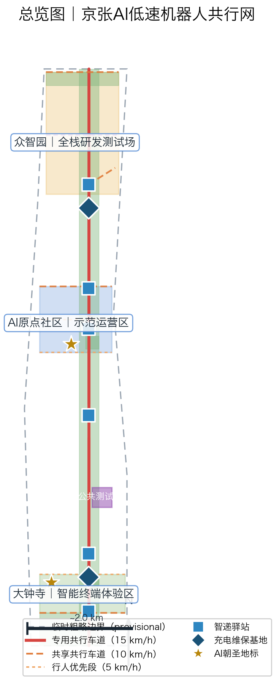
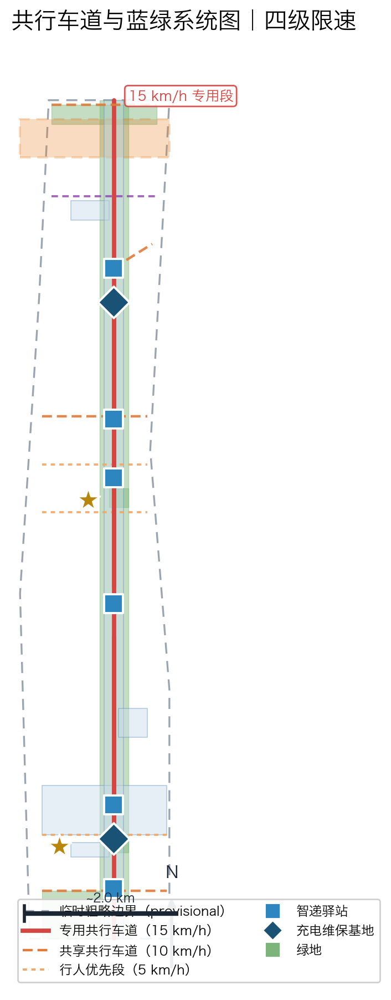
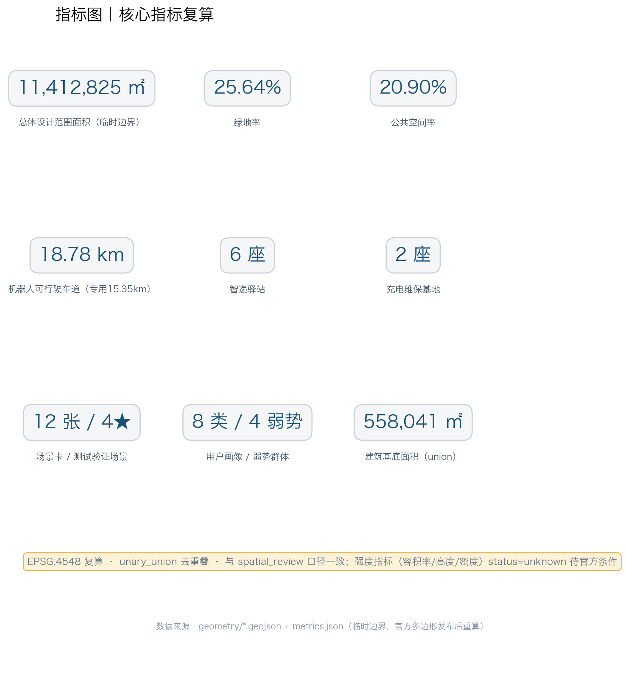

京张AI低速机器人共行网：人机共行的智能城市新脊梁
以京张铁路遗址公园慢行主轴为脊梁，提出'京张智行网·AI低速机器人共行带'总体概念：沿共行主廊布设专用低速机器人车道（15.4km专用+3.4km共享）、六座智递驿站与两座充电维保基地，以配送、导览、巡检、清洁四类低速机器人服务沿线社区、园区与高校。方案以'人机共行'为设计核心，提出专用/共享/行人优先三种断面与5/8/10/15km/h四级限速，配套12张AI场景卡（含4张测试验证场景）、8类用户画像、3个AI朝圣地标、7个全球生态案例、品牌视觉规范与运营KPI体系，形成可体验、可验证、可推广的低速机器人共行网络概念方案。
京张AI低速机器人共行网：人机共行的智能城市新脊梁
设计依据与资料清单
本 formal 方案以北京市规划和自然资源委员会海淀分局发布的《百年京张AI创新带城市设计国际方案征集资格预审公告》为第一权威依据 来源，以面向智能体的任务书摘录为补充依据 来源，以 brief/site-package/ 中维护者登记的临时粗略边界、重点区域、枚举、指标与来源清单为机器可读依据 来源。方案聚焦 robotics-autonomous-mobility（机器人与自动驾驶场景：配送、导览、巡检、清洁维护和自动驾驶接驳等低速试点）与 ai-origin-community（AI 原点社区与创新服务）两条赛道，对应 robot-delivery-low-speed（机器人低速配送）与 ai-traffic-walkability（AI+交通慢行评估）两个场景，把京张铁路遗址公园沿线重新定义为一条"人机共行"的低速机器人服务脊梁。
所有设计判断拆分为可追溯来源、可复算指标、可校验图层和可人工复核假设。机器人共行设施（车道、驿站、充电维保基地）全部落入九个 GeoJSON 图层，核心指标以 EPSG:4548 复算并与 scripts/spatial_review.py 的 union 规则一致 深度 深度。
临时边界与概念建议属性。 本包使用 geometry_role="provisional_constraint"、official_boundary=false 的临时粗略边界生成 空间数据；该组织方数据缺口不阻断内容评分，官方多边形发布后须全量重算。所有车道、限速、驿站选址、分期与运营机制均表述为"概念建议/参考方案/可供专业团队深化研究"，不构成政府审定结论或实施承诺。
现状诊断与问题基线
机器人共行网不是凭空的技术想象，而是对三个可验证现实问题的空间回应 深度：
1. 末端配送成本高企。 公开行业数据显示，城市末端配送"最后一公里"成本占全程物流成本比例长期在 30%–50% 区间，人工骑手模式在人口老龄化与用工成本上升下面临持续压力 来源。京张沿线高校、园区与社区订单密度高、路线规整，具备低速机器人规模化试点的天然条件。 2. 末端交通冲突频发。 外卖骑手逆行、占道与步行者争道的冲突是全国性城市治理痛点，也是本方案"人机共行"设计的核心靶点。共行网以专用道分离机器人与人流，以限速分级与冲突测试场把安全设计前置 [assumption:A-ROBOT-001]。 3. 老年与行动不便人群取件难。 大件、重件、药品配送对老年与残障居民的"最后 100 米"尤为困难，无障碍代取与语音取件是本方案公共利益设计的起点 来源。
数据缺口如实声明。 官方配送 OD 量、慢行人流基线、建筑与权属清单未公开，本方案对应指标保持 status=unknown 或标为方向性估计，缺口清单见 assumptions.json 与风险章节 [assumption:A-ROBOT-002] [assumption:A-ROBOT-006]。

三层范围工作框架
方案按公告确定的三层范围组织机器人共行网的三个设计层级：统筹研究范围（43.6 平方公里临时范围）回答"机器人产业生态与区域协同"；总体设计范围（约 11.4 平方公里临时边界）回答"共行网络空间结构与设施布局"；重点区域范围（368.4 公顷临时汇总）回答"三片区机器人场景的详细设计"。三层范围逐条映射至 compliance_matrix.json 公告 1.3/1.4/1.5 与 agent.1–agent.6 任务 标准 来源。
| 层级 | 设计问题 | 方案回答 | 数据落点 |
|---|---|---|---|
| 统筹研究范围 | 机器人产业生态与京津冀协同如何组织 | 海淀研发策源—亦庄政策示范—顺义运营基地"三角协同"，七要素生态图谱支撑 | compliance_matrix.json、standard_matrix.json |
| 总体设计范围 | 共行网络如何落图 | "一廊四支、六驿两基"空间结构，11 条共行道路、23 栋机器人相关建筑全部落图 | 空间数据、空间数据 |
| 重点区域范围 | 三片区如何达到详细设计深度 | 众智园=全栈研发测试场，原点社区=示范运营区，大钟寺=智能终端消费体验 | 空间数据、指标 |
三层工作不是割裂的图纸集合：统筹研究决定机器人产业与政策判断，总体设计把判断落实为车道、驿站与分期图层，重点区域详细设计验证具体地块上的人机共行安全与运营可行性。任何无法从结构化数据复算的面积、比例、规模或数量，均不写入正式结论 深度 深度。

统筹研究范围产业与未来城市研究
统筹研究范围的核心任务是构建世界级 AI 创新生态，机器人共行网是这一生态的"可感知、可体验"环节。北京已具备全国最完整的低速自动驾驶政策与产业基础：北京市高级别自动驾驶示范区自 2020 年设立以来持续扩区，为低速无人配送提供路权与政策试验场 来源；美团自动配送车在北京公开道路开展生鲜与药品配送试点 来源；新石器低速无人车在亦庄长期运营 来源；京东物流智能快递车实现常态化末端配送 来源。国际上，Starship Technologies 在大学城与郊区社区累计交付超百万单 来源，Serve Robotics 在洛杉矶开展人行道级配送运营 来源。七类证据共同表明：低速机器人配送已从实验室走向街道，缺少的不是技术，而是与人共行的城市空间设计——这正是本方案的主攻方向 标准。
七要素生态图谱。 机器人共行网把"土地、产业、资金、人才、算力、数据、场景"七要素落到同一张空间图上：土地=18 个用地分区（含机器人测试防护绿地与战略留白区）；产业=整机研发—算法算力—终端应用链条；资金=以公共空间运营与商业合作为主的多元来源概念建议；人才=机器人工程师公寓与开发者社区；算力=云端调度与算力中心（BLD-003）；数据=调度轨迹与订单数据的合规治理；场景=12 张场景卡。
区域协同。 方案与北纬社区、未来科学城、怀柔科学城、经开区（亦庄）及京津冀形成创新协同回路：亦庄承担政策试验与规模运营，顺义承担物流基地，海淀承担研发策源与场景开放；未来科学城与怀柔科学城的机器人感知与芯片技术可通过共行网场景反向验证。协同关系全部表述为概念建议 来源。
未来城市形态。 方案提出"人机共行街区"范式：机器人不是街头的异类，而是与行人、骑行者共享一套可预期的空间规则——专用道、驿站、充电桩与信号优先构成"机器人可达的街道家具系统"，为全球 AI 城市提供可复制断面原型。
总体设计范围城市更新与控规深度城市设计
总体概念：京张智行网（Jingzhang Smart Mobility Network）。 命名体系：主名称「京张AI低速机器人共行带」，简称「京张智行网」，英文 "Jingzhang AI Low-Speed Robot Co-Mobility Belt (JZ CoMobility)"；三层子命名：共行主廊（Co-Mobility Main Corridor）、智递驿站（Smart Delivery Station）、共行零点广场（Co-Mobility Zero Plaza）。命名回扣京张铁路"自主建造"精神与 AI 原点社区"朝圣地"定位，可延展、可国际传播 来源。
Logo 视觉规范（品牌识别度）。 核心形：一段轨道弧线从"人"字处双线岔开（京张人字形铁路的抽象化），右侧一枚圆形车轮点，构成"轨道×车轮×人字"三元素；主色：京张绿 #1F7A5C（遗址公园绿带）、智行银灰 #8E9BA8（机器人金属质感）、原点橙 #E86A33（能量与警示点缀）；应用规则：最小使用尺寸 12mm/32px，安全间距≥1/4 主形高度，深色底反白、禁用渐变与描边；延展系统：驿站/充电/接驳/巡检四类功能图标族、车道虚线节奏辅助图形、中英文字标组合。字体与图形均为原创几何构成，无侵权风险。
总体空间结构："一廊四支、六驿两基、三区联动"。 共行主廊沿京张遗址公园慢行主轴布设 空间数据，15.4 公里专用段+3.4 公里共享段合计约 18.8 公里可行驶车道 指标；四支分别为北部环廊、中部连接路、南部产业连接路与两条机器人干线（RD-009/RD-010）；六座智递驿站沿主廊约 1.2 公里服务半径分布 指标，两座充电维保基地分守南北 指标。18 个用地分区完整覆盖临时设计边界、无重叠 空间数据。
更新框架以"零大拆大建、轻设施先行"为原则：共行网先以车道划线、模块化驿站、临时充电设施启动，可迁移、可逆、可退出；建筑规模与强度指标全部 status=unknown 待官方控规条件 深度 深度。
重点区域详细设计
| 重点片区 | 设计定位 | 机器人空间动作 | AI产业与运营场景 | 证据引用 |
|---|---|---|---|---|
| 众智园AI自主创新加速区 | 全栈机器人研发测试场 | 整机研发中心A/B座、云端调度算力中心、测试防护绿地、发布测试广场、充电维保基地、8km/h封闭测试步道 | 感知算法测试、整机发布、标准制定、安全评测 | 空间数据、深度 |
| 北京AI原点社区 | 示范运营区（近期示范段） | 机器人时空馆（朝圣地标一）、共行零点广场（朝圣地标三）、智递驿站、人才公寓配送覆盖 | 社区配送试点、人机共行体验、开源开发者社区 | 空间数据、指标 |
| 大钟寺AI产业聚集区 | 智能终端消费体验区 | 智递方舟驿站旗舰（朝圣地标二）、智递体验广场、终端产业孵化器、大钟寺站接驳线 | 智能终端展示、无人零售、快递地铁接驳 | 空间数据、空间数据 |
三片区均达到概念深化深度：分别给出定位、空间动作、AI 场景、实施依赖与面积复核，详细设计深度由设计深度矩阵检查 深度。若只描述"打造示范区"而无功能、建筑、交通与实施项目证据，应视为未完成——本方案在 geometry/ 中提供了全部对应图层证据。

AI 创新生态、人才画像与 AI+ 场景
生态案例证据（7 条：6 个全球案例 + 1 个本地生态母体，均附一手来源）。 见统筹研究章节的案例清单：北京市高级别自动驾驶示范区 来源、美团自动配送车 来源、新石器低速无人车 来源、京东智能快递车 来源、Starship Technologies 来源、Serve Robotics 来源，以及海淀中关村科学城自身作为第 7 条"创新生态母体"证据（以公告与任务书为证 来源）。生态图谱七要素（土地/产业/资金/人才/算力/数据/场景）逐要素映射共行场景，成表于 compliance_matrix.json agent.2 条目。
用户画像（8 类，含 4 类弱势群体）。 每类画像均配"无 AI 替代路径"与申诉渠道，保证公共利益 来源：
| 画像 | 典型需求 | 空间响应 | 无AI替代路径 |
|---|---|---|---|
| 青年AI工程师 | 省时取件、夜间加班餐 | 公寓与园区驿站、夜间接驳 | 人工配送窗口保留 |
| 园区企业行政 | 内部件、办公耗材 | 园区内部件机器人专线 | 人工收发室保留 |
| 高校学生 | 校园快递、教材 | 校园驿站与宿舍楼接驳 | 人工快递点保留 |
| 老年居民 | 药品、重物、语音取件 | 语音取件通道、人工代收 | 社区志愿者代收点 |
| 残障人士 | 无障碍取件、代送代办 | 无障碍配送通道、驿站坡道 | 上门人工服务预约 |
| 儿童与家长 | 安全通行、上学接驳 | 行人优先段、限速5km/h | 家长护学岗保留 |
| 低数字技能居民 | 不依赖App取件 | 电话/语音下单、驿站人工窗 | 全人工服务窗口 |
| 外卖骑手（转型） | 职业转型、技能升级 | 远程安全员与运维培训岗 | 传统配送岗位保留 |
12 张 AI 场景卡（含 4 张★测试验证场景）。 场景卡覆盖配送、导览、巡检、清洁四类机器人，每卡九列：卡号/场景/服务对象/空间载体/所需数据/数据合法性边界/模型作用/公共价值/运营责任与退出机制 来源：
| 卡号 | 场景 | 服务对象 | 空间载体 | 所需数据 | 数据合法性边界 | 模型作用 | 公共价值 | 运营责任与退出机制 |
|---|---|---|---|---|---|---|---|---|
| RB-01 | 社区智递到家 | 社区居民 | 六座驿站+社区道路 | 订单地址、驿站格口 | 最小化采集，聚合统计 | 路径规划与格口调度 | 减少末端成本与车辆 | 驿站运营方；单量连续两季不达标即调整 |
| RB-02 | 医药品专送 | 老年与慢病居民 | 药店-驿站-社区 | 处方外配送需求 | 健康数据不得采集，仅履约 | 优先级调度与温控 | 保障用药可及 | 药店联合运营；温控异常即停 |
| RB-03 | 校园无人配送 | 高校学生 | 校园驿站+校内道 | 校园路网与课表 | 仅校内授权数据 | 避让策略与人流预测 | 降低校园电动车隐患 | 校方审核；安全事件即停 |
| RB-04 | 公园自动导览 | 游客与居民 | 共行绿廊五段 | 景点坐标、人流 | 不采集个人轨迹 | 多语导览与避障 | 提升公园可达体验 | 公园管理方；投诉超阈值即调整 |
| RB-05 | 夜间安全巡检 | 园区与社区 | 巡检绿带+园区道 | 视频与设备状态 | 区域化、脱敏、留档审计 | 异常识别与告警 | 补充夜间安防 | 安防联勤；误报率超标即校准 |
| RB-06 | 无障碍代取件 | 残障与老年居民 | 无障碍通道+驿站 | 预约需求清单 | 仅履约所需信息 | 需求匹配与调度 | 消除最后100米障碍 | 社区联合运营；满意度不达标即优化 |
| RB-07 | 企业园区内部件 | 园区企业 | 园区内部件专线 | 内部收发信息 | 企业内网隔离 | 批量路径优化 | 降低行政耗时 | 园区物业；成本超标即收缩 |
| RB-08 | 快递地铁接驳 | 通勤人群 | 大钟寺站接驳线 | 站点客流与格口 | 聚合级客流数据 | 错峰接驳调度 | 缓解站点周边停车 | 轨道与物流共营；高峰冲突即改时 |
| ★RB-09 | 人机共行冲突测试场 | 测试车队与公众 | 低速机器人公共测试场 | 仿真与实测冲突样本 | 公开测试协议+知情同意 | 冲突概率预测与避让验证 | 把安全验证前置 | 联合实验室；冲突率不降级即停测 |
| ★RB-10 | 夜间与雨雪安全验证 | 运营方与监管部门 | 示范段道路 | 天气与传感器数据 | 脱敏测试数据 | 恶劣条件可靠性评估 | 划定安全运营窗口 | 第三方评测；未达阈值即限运 |
| ★RB-11 | 无障碍配送全流程验证 | 残障与老年群体 | 无障碍通道全段 | 全流程实测记录 | 用户同意与隐私屏蔽 | 全流程可用性度量 | 验证包容性承诺 | 无障碍组织参与验收；不过即改造 |
| ★RB-12 | 远程接管应急演练 | 安全员与运营方 | 调度中心+全网络 | 演练脚本与接管记录 | 演练数据隔离存档 | 接管链路时延评估 | 兜底安全能力 | 定期演练；时延超标即暂停扩网 |
隐私与人工复核边界。 所有场景遵守数据最小化、公开来源、可解释与人工复核原则：机器人仅承担导航、配送、巡检告警等辅助职能，不作诊疗、不作审批、不作执法决定；调度算法遵守生成式人工智能服务管理要求 来源；场景卡不指定任何供应商为必要条件 [assumption:A-ROBOT-003]。
用地、建筑规模与拆改留方案
用地方案依据国土空间用途分类指南表达为 18 个完整、闭合、无重叠的用地分区 标准，机器人语义通过附加属性 robot_zone 表达而不改动代码枚举：共行绿廊五段（1401）、机器人全栈研发与测试区（0802）、终端产业区与智递商业区（05）、居住示范区（07）、测试防护绿带（1402）与战略留白区（16）等 空间数据。18 个分区完整覆盖临时设计边界、无重叠、无缝隙，满足空间复核的覆盖性要求 指标。
建筑方案区分三类：现状保留与改造（23 栋中的既有 15 栋，全部沿用原基底、不新增高层）、新建轻量驿站（6 座智递驿站，概念高度 4.5m，模块化可迁移）、新建充电维保基地（2 座，概念高度 6.0m）空间数据。拆改留原则为"零大拆大建"：本方案不主张任何既有建筑的拆除，全部改造与新建均为概念建议，拆改留结论须待官方权属与控规条件确认 深度。
建筑规模与强度指标（总建筑规模、容积率、建筑高度、建筑密度、退线、道路红线）无官方条件，统一 status=unknown 并在 assumptions.json 说明补数路径，概念高度仅作形态示意 深度 深度 [assumption:A-ROBOT-006]。
交通、轨道、市政与公共服务设施
共行车道系统（本方案核心交通创新）。 三种断面：专用段（机器人车道宽 2.5m，物理分隔，限速 15km/h）、共享段（与慢行共面，视觉分隔，限速 10km/h）、行人优先段（遗产保护范围与广场周边，机器人随行人流低速通行，限速 5km/h）；测试步道限速 8km/h。四级限速分级与车道宽度均为概念建议，最终由交通主管部门审定 [assumption:A-ROBOT-001]。共行主廊与京张慢行主轴叠加而非替代：公园慢行系统保持完整连续，机器人设施以叠加层身份融入 空间数据。
交叉口与重点段。 北五环上跨段与轨道站点接驳段为 CON-002 重点设计段，需交通、市政专业复核 空间数据；大钟寺站接驳线（RD-011）以错峰调度缓解站点周边冲突；全部道路图层保持在临时提交边界内。交通深度由 深度 管理，市政与新基建深度由 深度 管理。
市政与设施前置条件。 驿站供电、充电负荷、通信覆盖、消防通道为正式深化前置条件；两座充电维保基地与六座驿站按"模块化+可迁移"设计，避免一次性市政大改 空间数据。缺少管线、能源、消防工程资料时，一律列为正式深化前置条件而非设计结论。

蓝绿空间、公共空间与城市风貌
蓝绿空间以京张遗址公园活力带为骨架：共行绿廊五段（北段至南端）与绿地图层一致 空间数据，绿地率 0.256389、公共空间率 0.209042（EPSG:4548 union 复算）指标 指标。绿廊承载"可看机器人、可体验机器人、可乘坐机器人"的公共活动：共行零点广场（PS-001）设人机共行体验场与京张共行贡献墙（荣誉展示体系），人机共行记忆长廊（PS-004）串联京张铁路记忆与机器人时空馆参观动线 空间数据 深度。
公共空间组件库。 驿站模块、充电桩、接驳站台、信息柱四类组件统一设计语言（银灰+京张绿），可组合、可迁移，供专业团队深化复用。
城市风貌。 风貌控制分三类：官方管控（文保、绿地、蓝线等法定条件，待官方数据）、设计建议（机器人设施色彩材质：银灰主体+京张绿标识带+原点橙安全警示）、待确认条件（建筑体量、界面）。严禁在无文保或控规依据时给出伪精确控制线 标准。遗产保护范围内共行采用行人优先模式，速度不高于 5km/h 空间数据。
更新项目清单、实施政策与分期计划
12 个可审查概念项目包（JZ-01..JZ-12）。 每项列位置、类型、前置条件、主体类型、资金类别与退出条件，全部为概念建议而非实施承诺 深度 深度：
| 编号 | 项目 | 位置 | 类型 | 前置条件 | 主体类型 | 资金类别 | 退出条件 |
|---|---|---|---|---|---|---|---|
| JZ-01 | 原点社区配送示范段 | 原点社区 | 试点运营 | 试点需求调查、社区同意 | 运营企业+社区 | 商业运营+公共补贴 | 连续两季 KPI 不达标即收缩 |
| JZ-02 | 共行主廊专用道划线 | 公园主轴 | 交通设施 | 交通专业复核 | 交通部门+专业团队 | 公共投资 | 复核不通过即改共享模式 |
| JZ-03 | 六座智递驿站 | 主廊沿线 | 模块化建筑 | 选址权属确认 | 运营企业 | 商业投资 | 使用率不达标即迁移 |
| JZ-04 | 两座充电维保基地 | 北段/南段 | 新基建 | 电力与消防条件 | 能源+运营企业 | 混合 | 负荷不足即缩减车队 |
| JZ-05 | 云端调度数字孪生平台 | 调度中心 | 数字平台 | 算法备案与安全评测 | 科技企业+监管 | 商业+公共 | 安全事件超阈值即停网 |
| JZ-06 | 共行冲突测试场 | 公共测试场 | 测试设施 | 公开测试协议 | 联合实验室 | 公共+商业 | 冲突率不降级即停测 |
| JZ-07 | 机器人时空馆 | 原点社区 | 文化建筑 | 展陈内容清权 | 文化运营方 | 混合 | 参观量不达标即改展 |
| JZ-08 | 智递方舟驿站旗舰 | 大钟寺 | 体验建筑 | 商业合作确认 | 商业运营方 | 商业投资 | 经营不达预期即转型 |
| JZ-09 | 共行零点广场 | 原点社区 | 公共空间 | 公共空间许可 | 公共运营方 | 公共投资 | 活动安全风险即调整 |
| JZ-10 | 大钟寺站接驳线 | 大钟寺站 | 交通接驳 | 轨道与交管协同 | 轨道+物流共营 | 混合 | 高峰冲突即改时段 |
| JZ-11 | 北五环上跨共行段 | 北五环节点 | 重点设计段 | 交通市政专项复核 | 专业团队+部门 | 公共投资 | 复核不过即绕行替代 |
| JZ-12 | 无障碍配送与语音取件 | 全线驿站 | 包容性服务 | 无障碍组织验收 | 运营方+社区 | 公共补贴 | 验收不过即改造 |
分期计划（与 100 天征集周期区分）。 近期示范段（PH-001，原点社区配送试点，6-12 个月）、中期网络化（PH-002，大钟寺+公园核心段联网，1-3 年）、远期贯通（PH-003，众智园全栈测试接入全线，3-5 年）空间数据。每期前置条件、主体类型、资金类别与退出条件如上表，时序为概念建议 指标。
长期运营（agent.6）。 四季活动体系：春·新品发布（众智园发布广场）、夏·夜间共行节（公园绿廊）、秋·开发者节（原点社区）、冬·暖递行动（老年药品配送加开）；开发者社区：开源共行规则库与仿真数据集年度开放；场景开放日：每月公众试乘与安全科普；三条公共体验路线：共行零点广场→时空馆的文化线、测试场→发布广场的创新线、驿站→旗舰驿站的消费线；国际传播：中英双语文案与"世界首个铁路遗产公园低速机器人共行网络"叙事。全部为概念建议 来源。
指标体系、面积复算与合规矩阵
指标复算遵循统一设计深度要求 深度。核心指标与 metrics.json 一致（EPSG:4548、unary_union 去重叠）：
| 指标 | 数值 | 单位 | 状态 |
|---|---|---|---|
| 总体设计范围面积 | 11,412,825.386 | ㎡ | known（临时边界） |
| 重点区域数量 | 3 | 处 | known |
| 绿地率 | 0.256389 | 比值 | known |
| 公共空间率 | 0.209042 | 比值 | known |
| 建筑基底面积（union） | 558,040.811 | ㎡ | known |
| 机器人可行驶车道 | 18,780.730 | m | known |
| 其中专用车道 | 15,351.069 | m | known |
| 智递驿站 | 6 | 座 | known |
| 充电维保基地 | 2 | 座 | known |
| 场景卡 / 测试验证 | 12 / 4 | 张 | known |
| 用户画像 / 弱势群体 | 8 / 4 | 类 | known |
| 容积率、建筑高度、建筑密度 | — | — | unknown（待官方条件） |
指标分三类管理：第一类可由提交几何直接复算的空间指标（边界面积、绿地率、公共空间率、建筑基底、车道长度）；第二类需官方控规支撑的管控指标（容积率、高度、密度，全部 unknown）；第三类需运营数据校准的绩效指标（单量、冲突率、满意度，见下方运营 KPI）。三类分别进入 metrics.json、assumptions.json 与 compliance_matrix.json，避免把运营愿景误写成审定规划条件 指标 指标。
运营 KPI 体系（可实施性证据）。 目标、监测频率与退出调整阈值成表：
| KPI | 目标值 | 监测频率 | 退出/调整阈值 |
|---|---|---|---|
| 示范段日均配送单量 | ≥2,000 单/日 | 月度 | 连续两季 <50% 目标即收缩示范段 |
| 平均送达时长 | ≤30 分钟 | 实时+月度 | 连续一月超标即调整线路 |
| 人机冲突率 | ≤0.1 次/千公里 | 月度 | 超 3 倍即全线降速 |
| 需人工介入率 | ≤0.5 次/万单 | 实时+月度 | 超 3 倍即暂停扩网 |
| 驿站服务半径覆盖率 | ≥80% | 季度 | 不达标即增补/迁移驿站 |
| 公众满意度 | ≥75% | 季度调查 | 连续两季不达标即改规则 |
| 单位配送成本 | ≤人工配送 90% | 月度 | 超人工成本即转混合模式 |
| 弱势群体使用占比 | ≥10% | 季度 | 不达标即加强无障碍改造 |
合规矩阵。 公告 1.3/1.4/1.5 与 agent.1–agent.6 的 23 条必选任务逐条映射章节、图层、指标、图纸、HTML 与假设 标准；15 项设计深度矩阵全部 complete，其中 4 项注明"待官方条件"的完整性限制，不作虚假完备声明。

风险、版权与合规说明
风险六维度（risk.json）。 数据与隐私（score 3：最小化采集、履约限定、禁用于商业推荐）、公众接受与安全观感（score 4：分期限速、宣传教育、公开事故台账）、技术成熟度（score 3：限定天气窗口、冗余接管、人工备份）、政策与法规不确定性（score 4：参照北京市智能网联汽车政策先行区实践，仅按概念建议提交）、运营成本（score 3：模块化降成本、季度复盘）、空间权属争议（score 3：可迁移设施、联合确认）。所有 score≥3 维度均附 human_review 人工复核安排 深度 [assumption:A-ROBOT-005]。
合规边界。 本方案不构成任何政府审定结论或实施承诺，不代表官方对任何车道、驿站、限速或运营安排的认可；全部空间落地内容为概念建议，供专业团队深化 来源。机器人调度与 AI 交互遵守生成式人工智能服务管理要求（算法备案、内容标识、人类复核、投诉渠道）来源；共行车道不侵占无障碍通行空间，符合无障碍环境建设法理念 来源。方案不包含个人隐私、涉密或非公开空间数据，不伪造官方背书。
版权台账。 全部文本、几何、图件、PDF、HTML 由本 agent 原创生成或基于公开资料引用；字体使用免费商用中文字体，案例引用均标注来源与"背景参考"属性；逐项资产权利台账见 report/copyright_statement.md。HTML 页面不加载远程脚本、瓦片、字体或 API，不跟踪评审者行为。
参考资料
1. brief/public-brief.md（公开任务书总纲） 2. brief/site-package/design_brief.json（提交政策与边界规则） 3. brief/site-package/agent_taskbook.json（agent.1–agent.6 任务） 4. brief/site-package/geometry/provisional_boundaries.geojson（临时边界） 5. brief/site-package/enums/（枚举） 6. data/source_registry.json（资料用途登记） 7. data/processed/agent_fact_pack.md（事实导航包） 8. 完整机器索引见 sources.json、metrics.json、compliance_matrix.json、standard_matrix.json、design_depth_matrix.json 与 risk.json 来源